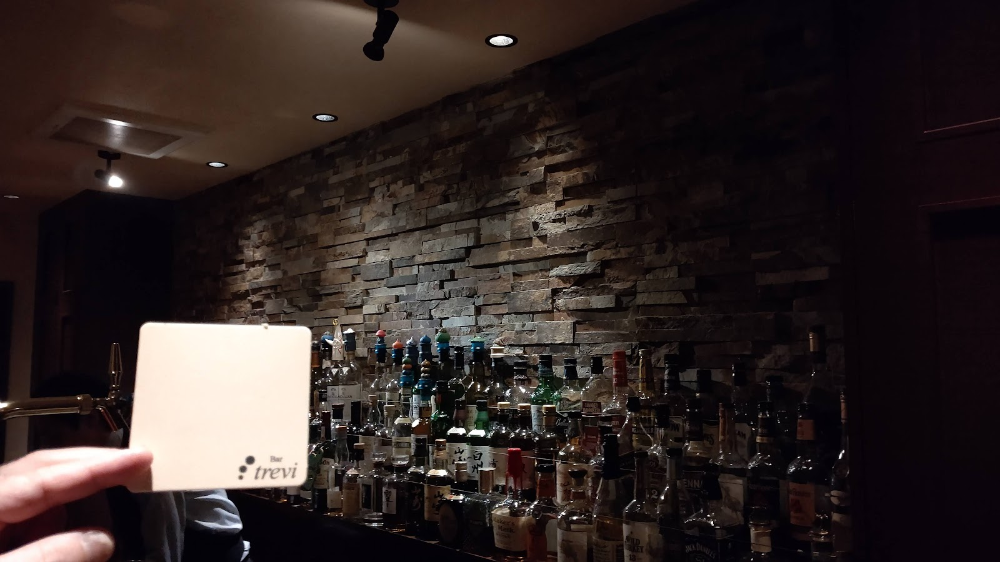
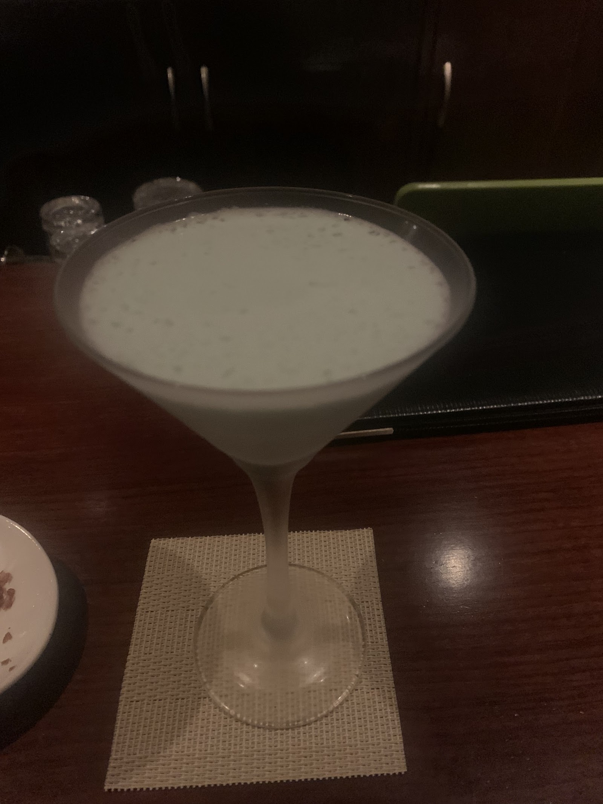

Concept
こだわり
Bar treviに実際にご来店されたお客様の声から、お店の雰囲気をご紹介します。
以下はGoogleクチコミに寄せられた、第三者であるお客様からの評価です。
Photo by 本間善勝(Google マップ)

Photo by 本間善勝(Google マップ)
01
落ち着いた雰囲気
店内はブラウンを基調とした、少し明るめで落ち着いた雰囲気です。静かにお酒を楽しめる空間だという声をいただいています。
02
マスターとの会話・一人でも楽しめる
マスターとの会話を楽しみに通われているお客様や、一人でも気兼ねなく楽しく飲めるという声をいただいています。会話のペースはお客様に合わせてもらえるとのご感想もあります。
03
清潔感
店内の清潔感についても、良い評価をいただいています。バーとして落ち着いて過ごせる空間づくりが評価されています。

Photo by T Sakura(Google マップ)
04
ウイスキー・カクテル・葉巻
ウイスキーやカクテルに加えて葉巻も楽しめる点について、お客様から好評の声をいただいています。メニューにない一杯にも快く対応してもらえたというご感想もあります。
05
女性スタッフも在籍
女性スタッフが在籍しており、週末には歌を楽しめる日もあるとのお声をいただいています。お一人でもグループでも、居心地よく過ごせる雰囲気です。
ご来店・お問い合わせ
お電話・地図・Instagramから、お好きな方法でBar treviへどうぞ。